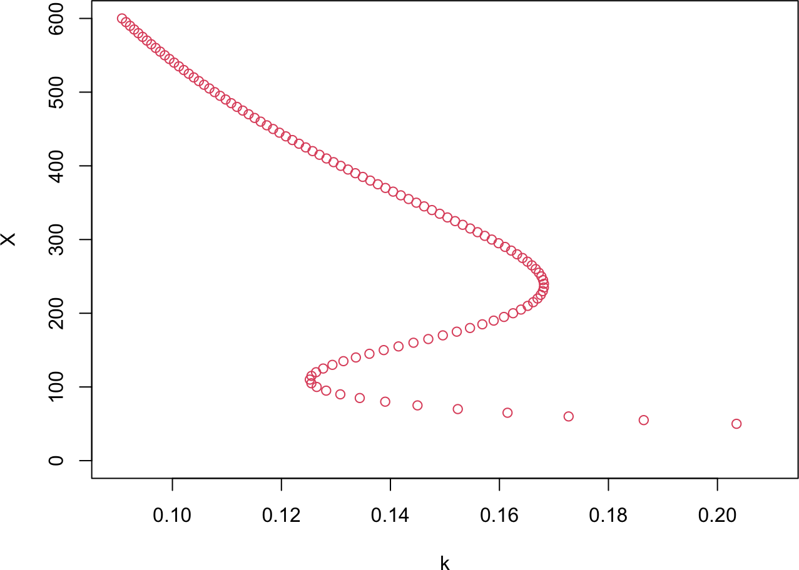
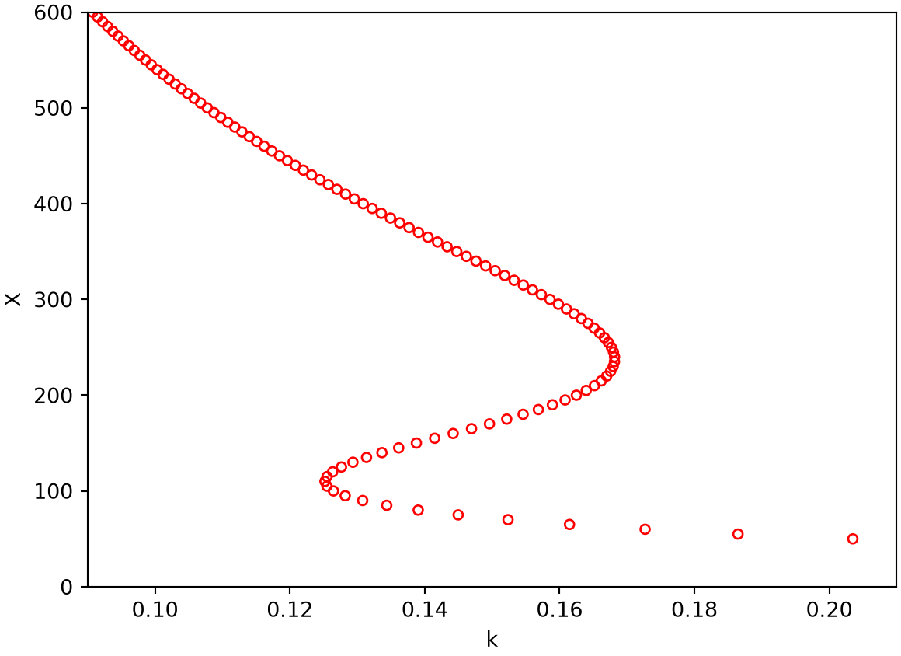
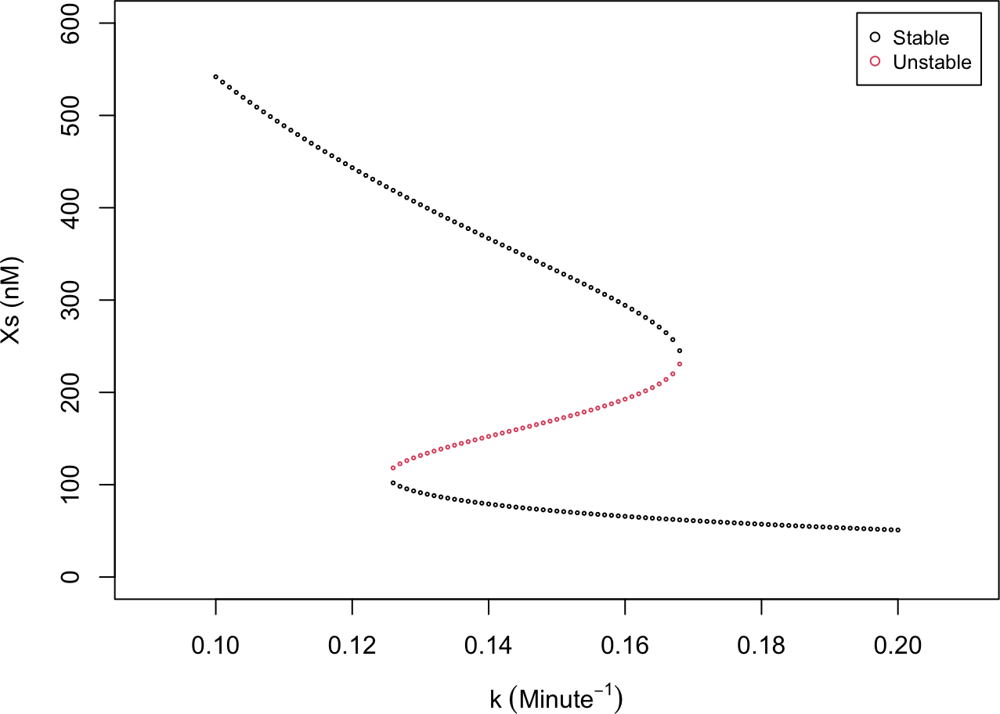
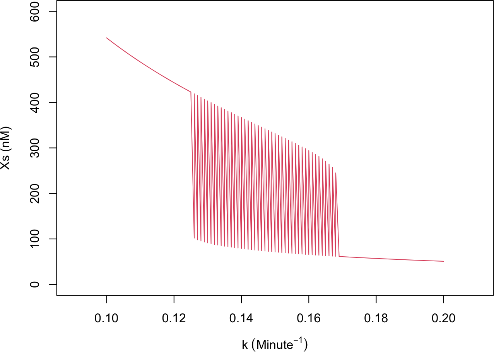
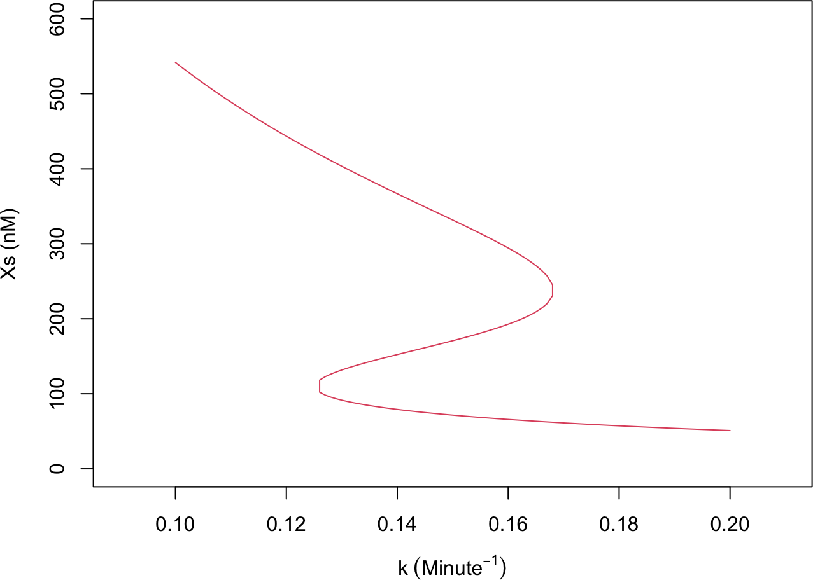
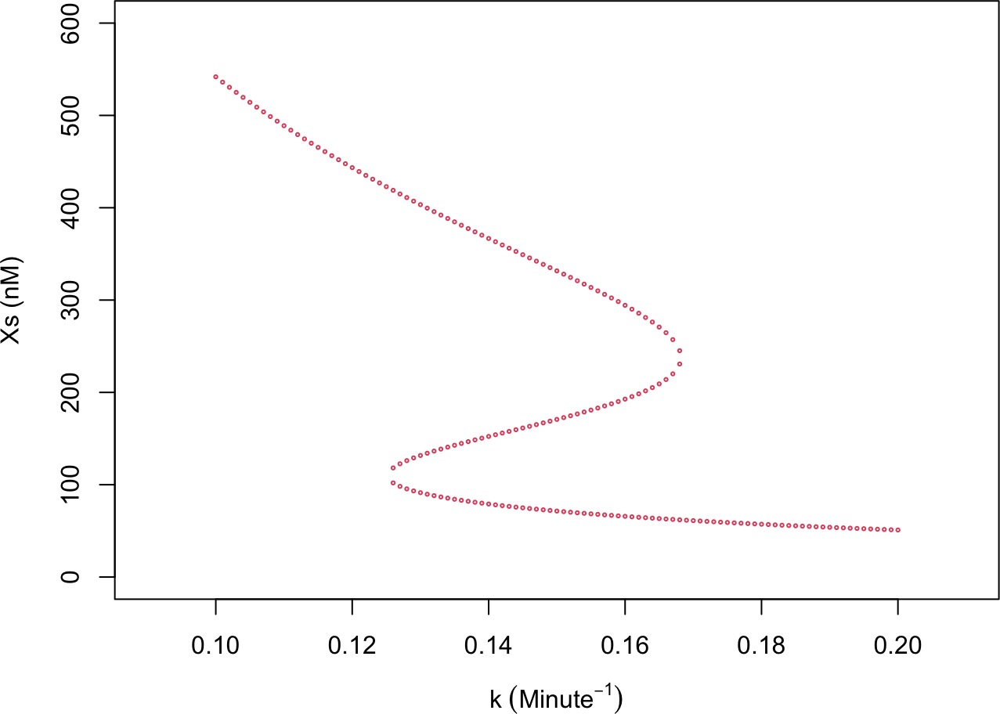

We continue with the single self-activating gene from Part 2A (Equations (7) and (8)). As we saw in Part 2D, varying the degradation rate \(k\) changes the number of steady states: the circuit is monostable for some \(k\) and bistable (two stable states plus one unstable state) for others. To see the whole picture at once, we treat \(k\) as a control parameter and plot the steady-state level \(X_s\) against \(k\). This curve is a one-dimensional bifurcation diagram. We use the rate equation
with state variable \(X\) and control parameter \(k\). Every point on the diagram is a steady state, so it satisfies \(f(X, k) = 0\). This chapter finds those steady states directly: at each value of \(k\) we locate the roots of \(f(X, k) = 0\), or reach them by simulation, and assemble the diagram from the resulting points. Part 2F takes the complementary view, tracing the diagram as a continuous curve. Some methods here are robust; others are homemade and work well only for this saddle-node example, as noted where they appear.
2E.1 Separation of variables
For this particular \(f\), the steady-state condition \(f(X, k) = 0\) can be solved for \(k\) explicitly as a function of \(X\):
\[ k = \frac{10}{X} + 45\frac{X^3}{X^4 + 200^4} . \]
Sweeping \(X\) over a range (avoiding \(X = 0\)) and evaluating \(k\) traces the curve directly, with no root-finding needed.
R implementation
func_k <-function(X) 10/ X +45* X^3/ (X^4+200^4)X_all <-seq(50, 600, by =5) # X grid; avoid X = 0k_all <-func_k(X_all)plot(k_all, X_all, xlab ="k", ylab ="X", type ="p", col =2,xlim =c(0.09, 0.21), ylim =c(0, 600))

Python implementation
import numpy as npimport matplotlib.pyplot as pltdef func_k(X):return10/ X +45* X**3/ (X**4+200**4)X_all = np.arange(50, 605, 5) # X grid; avoid X = 0k_all = func_k(X_all)plt.scatter(k_all, X_all, facecolors="none", edgecolors="red", s=20)plt.xlabel("k"); plt.ylabel("X")plt.xlim(0.09, 0.21); plt.ylim(0, 600)
(0.09, 0.21)
(0.0, 600.0)
plt.show()

The resulting curve is S-shaped and shows how the circuit’s behavior changes with \(k\). It has two turning points, near \(k = 0.125\) and \(k = 0.170\), where a stable steady state and the unstable steady state meet and annihilate; these are the bifurcation points. For \(k\) below the first point the system is monostable at a relatively high \(X\); between the two points it is bistable, with a high and a low stable state (and an unstable one in between); above the second point it is monostable again at a low \(X\). Because the branches meet and vanish at the turning points, this is a saddle-node bifurcation (Strogatz 2015).
This method is exact and cheap, but it depends on being able to solve \(f(X, k) = 0\) for \(k\) analytically. The remaining methods do not, so they also apply to circuits where no such shortcut exists.
2E.2 Direct method: find all roots
The most direct general approach samples \(k\) uniformly and, at each \(k\), finds every root \(X_s\) of \(f(X, k) = 0\). We classify each root from the sign of \(\frac{df}{dX}\) (Part 2D), stable when it is negative and unstable otherwise, estimated here with a small finite step \(dx\). This is the most robust method in the chapter and works well for our example, though for a general nonlinear \(f\) there is no guarantee of finding every root, and it is slower than the methods that follow.
The roots come out as a scatter of \((k, X_s)\) points that are not ordered along the curve, so joining them in the order found would give a tangled line. We reorder them with a nearest-neighbor walk: start at the leftmost point, then repeatedly step to the closest unused point until all points are used. (In the inverse-distance matrix used below, the nearest point is the one with the largest score.)
NoteRecipe 2E.2.1
Objective. Trace the bifurcation curve: at each value of the parameter k, find every steady state and mark it stable or unstable.
Model. A self-activating gene: basal transcription plus an excitatory Hill function, minus linear degradation, f(X, k) = g0 + g1*(X/Xth)^n/(1 + (X/Xth)^n) - k*X, with k the control parameter.
Method. Sample k on a grid; at each k find all roots of f(X, k) = 0 with a library root-finder, classify each by the sign of df/dX, and order the scattered points with a nearest-neighbor walk.
Test.g0 = 10, g1 = 45, Xth = 200, n = 4; k swept across a range (bistable near k = 0.15).
Show. A plot of steady-state X versus k, points colored by stability (the bifurcation curve).
Verification. The result is an S-shaped curve: over a middle k range there are three steady states (two stable, one unstable), collapsing to one outside it.
R implementation
rootSolve::uniroot.all finds all roots of a function on an interval in one call (Soetaert 2009).
# For each sampled k, find all roots of f(X, k) = 0 and label each by stabilitylibrary(rootSolve)# Model derivative from Equation (1); reused by the methods belowderivs_k <-function(X, k) 10+45* X^4/ (X^4+200^4) - k * Xdx <-0.1# small step to estimate df/dX for stabilityk_all <-seq(0.1, 0.2, by =0.001)results <-matrix(0, nrow =length(k_all) *3, ncol =3) # columns: k, Xs, stabilityind <-0for (k in k_all) { roots <-uniroot.all(derivs_k, k = k, interval =c(0, 800))for (x in roots) { ind <- ind +1 stability <-if (sign(derivs_k(X = x + dx, k = k)) <0) 1else2# 1 stable, 2 unstable results[ind, ] <-c(k, x, stability) }}results <- results[1:ind, ]plot(results[, 1], results[, 2], pch =1, cex =0.3, col = results[, 3],xlab =expression(k ~ (Minute^{-1})), ylab ="Xs (nM)",xlim =c(0.09, 0.21), ylim =c(0, 600))legend("topright", inset =0.02, legend =c("Stable", "Unstable"),col =1:2, pch =1, cex =0.8)

# joining the points in the order found: not yet ordered along the curveplot(results[, 1], results[, 2], type ="l", col =2,xlab =expression(k ~ (Minute^{-1})), ylab ="Xs (nM)",xlim =c(0.09, 0.21), ylim =c(0, 600))

# reorder the scattered roots into a connected curve (nearest-neighbor walk)d <-as.matrix(dist(results[, 1:2])) # pairwise distances between pointsm <-1/ d # inverse distance; nearest point scores highestnum_total <-nrow(results)sequence <-integer(num_total)if_unused <-rep(1, num_total) # 1 unused, 0 usedpoint_current <-which.min(results[, 1]) # start at the smallest-k pointsequence[1] <- point_currentif_unused[point_current] <-0for (i in2:num_total) { point_current <-which.max(m[, point_current] * if_unused) # closest unused point sequence[i] <- point_current if_unused[point_current] <-0}plot(results[sequence, 1], results[sequence, 2], type ="l", col =2,xlab =expression(k ~ (Minute^{-1})), ylab ="Xs (nM)",xlim =c(0.09, 0.21), ylim =c(0, 600))

Python implementation
scipy.optimize.fsolve returns one root per initial guess, so we pass a vector of guesses and then discard spurious roots (where \(|f|\) is not near zero) and any outside the range. Several guesses can converge to the same root, so we also drop duplicates; uniroot.all in R does this in one step.
# For each sampled k, find all roots of f(X, k) = 0 and label each by stabilityimport warningswarnings.filterwarnings("ignore") # suppress fsolve/numpy runtime warningsfrom scipy.optimize import fsolvedef derivs_k(X, k):return10+45* X**4/ (X**4+200**4) - k * Xdx =0.1k_all = np.arange(0.1, 0.201, 0.001)results = np.zeros((len(k_all) *10, 3)) # columns: k, Xs, stabilityind =0for k in k_all: roots = fsolve(derivs_k, x0=np.arange(50, 500, 50), args=(k,))for x in roots:ifabs(derivs_k(x, k)) >0.01: # fsolve can return non-roots; keep true roots onlycontinueif0<= x <=800: stability =1if np.sign(derivs_k(x + dx, k)) <0else2 results[ind] = [k, x, stability] ind +=1results = results[:ind]# several initial guesses may land on the same root; keep unique (k, Xs)_, uniq = np.unique(np.round(results[:, :2], 2), axis=0, return_index=True)results = results[np.sort(uniq)]stable = results[results[:, 2] ==1]unstable = results[results[:, 2] ==2]plt.scatter(stable[:, 0], stable[:, 1], s=10, color="black", label="Stable")
<matplotlib.collections.PathCollection object at 0x118366990>
The scatter shows both stable branches (high and low \(X\)) and the unstable middle branch, colored by stability. After reordering, the points connect into the same smooth S-curve found by separation of variables, now obtained without an explicit formula for \(k(X)\).
2E.3 Bisection method
The library root-finder can be replaced by a homemade one. The bisection method(Press et al. 2007) brackets a root: if \(f\) has opposite signs at the two ends of an interval, a root must lie between them, and repeatedly halving the interval (keeping the half across which the sign still changes) converges to it. Bisection is simple and robust, but it has two limitations. It needs a sign change, so it misses roots where \(f\) only touches zero, and it returns nothing when the two endpoints share a sign even if roots exist between them. It also finds only one root per interval. Both effects show up when we test it on the whole range \([0, 600]\): at \(k = 0.12\) and \(k = 0.2\) (monostable) it returns the single root, while at \(k = 0.15\) (bistable) it returns just one of the three.
To find every root, we bracket: scan the range in many small windows and apply bisection to each window that contains a sign change (the all_roots_bracketing driver, with resolution setting the window width). Applied across \(k\), this reproduces the same scattered \((k, X_s)\) points as in 2E.2. Reordering them into the curve is the identical nearest-neighbor walk from 2E.2 and is omitted here. Both implementations reuse the model derivative derivs_k defined in 2E.2.
NoteRecipe 2E.3.1
Objective. Find steady states with a homemade bracketing root-finder, and recover all roots by scanning windows.
Model. A self-activating gene: basal transcription plus an excitatory Hill function, minus linear degradation, f(X, k) = g0 + g1*(X/Xth)^n/(1 + (X/Xth)^n) - k*X, with k the control parameter.
Method. Bisection: on an interval where f changes sign, repeatedly halve it, keeping the half that still brackets the root; apply it to each small window with a sign change to find all roots.
Test.g0 = 10, g1 = 45, Xth = 200, n = 4 on [0, 600], at k = 0.12, 0.15, and 0.2.
Show. The roots found on the whole interval versus by the windowed scan, at each k.
Verification. On the whole interval, bisection returns the single root at monostable k (0.12, 0.2) but only one of the three at bistable k = 0.15; the windowed scan recovers all three.
R implementation
# bisection: find one root of f where it changes sign across the intervalbisection <-function(f, interval, epsilon =1e-6, ...) { x_min <- interval[1]; f1 <-f(x_min, ...) x_max <- interval[2]; f2 <-f(x_max, ...)if (abs(f1) < epsilon) return(x_min)if (abs(f2) < epsilon) return(x_max)if (f1 * f2 >0) return(NA) # same sign: no bracketed rootwhile (f1 * f2 <0) { x_mid <- (x_min + x_max) /2 f3 <-f(x_mid, ...)if (abs(f3) < epsilon) return(x_mid)if (f1 * f3 >0) { f1 <- f3; x_min <- x_mid } # sign change is in the upper halfelse { f2 <- f3; x_max <- x_mid } # sign change is in the lower half }}for (k inc(0.12, 0.15, 0.2)) { root <-bisection(function(X) derivs_k(X, k), interval =c(0, 600))cat(sprintf("k = %.2f: root = %.2f\n", k, root))}
k = 0.12: root = 443.43
k = 0.15: root = 331.61
k = 0.20: root = 50.94
# all roots by bracketing: scan the range in small windows and bisect eachall_roots_bracketing <-function(f, method, interval, resolution =1e-2, ...) { x_all <-seq(interval[1], interval[2], by = resolution * (interval[2] - interval[1])) roots <-numeric(0)for (i inseq_len(length(x_all) -1)) { root <-method(f, c(x_all[i], x_all[i +1]), ...)if (!is.na(root)) roots <-c(roots, root) }if (length(roots) ==0) NAelseunique(roots)}
# trace the curve: at each k, find every root by bracketed bisectionk_all <-seq(0.1, 0.2, by =0.001)results <-matrix(0, ncol =2, nrow =length(k_all) *3) # columns: k, Xsind <-1for (k in k_all) { roots <-all_roots_bracketing(function(X) derivs_k(X, k), bisection,interval =c(0, 600), resolution =1e-2) num_X <-length(roots) results[ind:(ind + num_X -1), 1] <- k results[ind:(ind + num_X -1), 2] <- roots ind <- ind + num_X}results <- results[1:(ind -1), ]plot(results[, 1], results[, 2], pch =1, cex =0.3, col =2,xlab =expression(k ~ (Minute^{-1})), ylab ="Xs (nM)",xlim =c(0.09, 0.21), ylim =c(0, 600))

Python implementation
# bisection: find one root of f where it changes sign across the intervaldef bisection(f, interval, epsilon=1e-6, **kwargs): x_min, x_max = interval f1 = f(x_min, **kwargs); f2 = f(x_max, **kwargs)ifabs(f1) < epsilon: return x_minifabs(f2) < epsilon: return x_maxif f1 * f2 >0: returnNone# same sign: no bracketed rootwhile f1 * f2 <0: x_mid = (x_min + x_max) /2 f3 = f(x_mid, **kwargs)ifabs(f3) < epsilon: return x_midif f1 * f3 >0: f1, x_min = f3, x_mid # sign change is in the upper halfelse: f2, x_max = f3, x_mid # sign change is in the lower halfreturnNonefor k in (0.12, 0.15, 0.2): root = bisection(lambda X: derivs_k(X, k), (0, 600))print(f"k = {k}: root = {root:.2f}")
k = 0.12: root = 443.43
k = 0.15: root = 331.61
k = 0.2: root = 50.94
# all roots by bracketing: scan the range in small windows and bisect eachdef all_roots_bracketing(f, method, interval, resolution=1e-2, **kwargs): x_all = np.linspace(interval[0], interval[1], int(1/ resolution) +1) roots = []for i inrange(len(x_all) -1): root = method(f, (x_all[i], x_all[i +1]), **kwargs)if root isnotNone: roots.append(root)return np.unique(roots).tolist() if roots else []
# trace the curve: at each k, find every root by bracketed bisectionk_all = np.arange(0.1, 0.201, 0.001)results = np.zeros((len(k_all) *3, 2)) # columns: k, Xsind =0for k in k_all: roots = all_roots_bracketing(lambda X: derivs_k(X, k), bisection, (0, 600), resolution=1e-2) n =len(roots) results[ind:ind + n, 0] = k results[ind:ind + n, 1] = roots ind += nresults = results[:ind]plt.scatter(results[:, 0], results[:, 1], color="red", s=3)
<matplotlib.collections.PathCollection object at 0x118614410>
The three-value test confirms the single-root limitation: at \(k = 0.15\) bisection on \([0, 600]\) returns only one of the three steady states. The bracketed driver recovers all of them, giving the same scatter (and, after the 2E.2 reordering, the same S-curve).
2E.4 False position method
The false-position method (Press et al. 2007) is bisection with a better guess. Instead of the midpoint, it takes the point where the straight line through the two endpoints \((x_{min}, f_1)\) and \((x_{max}, f_2)\) crosses zero:
Everything else is unchanged: the same sign-change bookkeeping and the same all_roots_bracketing driver from 2E.3, so it inherits the same limitations (one root per interval, and it needs a sign change). It can converge faster than bisection. As with bisection, testing on \([0, 600]\) at \(k = 0.15\) returns only one of the three roots, though possibly a different one, since the interpolation takes a different path.
NoteRecipe 2E.4.1
Objective. Find roots with the false-position bracketing method.
Model. A self-activating gene: basal transcription plus an excitatory Hill function, minus linear degradation, f(X, k) = g0 + g1*(X/Xth)^n/(1 + (X/Xth)^n) - k*X, with k the control parameter.
Method. False position: like bisection, but replace the midpoint with the point where the line through the interval endpoints crosses zero, x_new = (xmin*f2 - xmax*f1) / (f2 - f1); drive it over windows to find all roots.
Test.g0 = 10, g1 = 45, Xth = 200, n = 4 on [0, 600] at k = 0.15.
Show. The roots found on the whole interval versus by the windowed scan at k = 0.15.
Verification. On the whole interval at k = 0.15 it returns only one of the three roots (possibly a different one than bisection); the windowed scan finds all three, often in fewer iterations.
The bracketed scatter is the same as bisection’s. For this smooth, well-behaved problem false position offers no visible advantage; its speedup matters more when each function evaluation is expensive.
2E.5 Bifurcation curve by ODE simulation
Every method so far solves \(f(X, k) = 0\) algebraically. A different idea is to follow the steady states with the ODE itself. Starting at \(k = 0.1\) from an arbitrary \(X_0\), we integrate \(\frac{dX}{dt} = f(X, k)\) until it settles on a stable steady state, record it, nudge \(k\) by a small \(\Delta k\), and repeat from the previous state. Tracing a branch this way is cheap and needs no root-finding.
Two tricks let it cover the whole S-curve:
Reversing at a catastrophe. When \(k\) passes a bifurcation point the current stable branch disappears, and the next integration lands far away (\(|X_i - X_{i-1}|\) exceeds a threshold gap). Detecting that jump, we reverse the sweep direction of \(k\) (flip \(d \to -d\)) and carry on.
Capturing the unstable branch. Integrating \(\frac{dX}{dt} = -f(X, k)\) (i.e. \(d = -1\)) flips the stability, so the unstable steady state becomes an attractor. Sweeping \(k\) backward under \(-f\) therefore traces the unstable middle branch.
Together the sweep climbs the high stable branch, reverses at the upper bifurcation and returns along the unstable branch, reverses again at the lower bifurcation, and finishes up the low stable branch. The initial \(X_0\) is random; we fix a seed here so the figure is reproducible.
NoteRecipe 2E.5.1
Objective. Trace the full S-shaped bifurcation curve, including the unstable branch, by following steady states with ODE integration rather than root-finding.
Model. A self-activating gene: basal transcription plus an excitatory Hill function, minus linear degradation, f(X, k) = g0 + g1*(X/Xth)^n/(1 + (X/Xth)^n) - k*X, with k the control parameter.
Method. From a starting state, integrate dX/dt = f(X, k) to a stable steady state, nudge k, and continue from the previous state; reverse the k-sweep at a large jump, and integrate dX/dt = -f(X, k) to capture the unstable branch as an attractor.
Test.g0 = 10, g1 = 45, Xth = 200, n = 4, sweeping k across the bistable range.
Show. A plot of steady-state X versus k, including the unstable branch.
Verification. The traced points reproduce the S-curve of 2E.2, now including the unstable middle branch.
R implementation
rootSolve::runsteady integrates an ODE until it reaches a steady state.
library(rootSolve)set.seed(1) # reproducible random initial condition# dX/dt = d * f(X, k): d = +1 settles on a stable state, d = -1 on an unstable onederivs_k_sim <-function(t, X, params) {with(as.list(params), list(d * (10+45* X^4/ (X^4+200^4) - k * X)))}gap <-100# a jump larger than this flags a bifurcation (catastrophe)t_max <-1000# max integration time to reach a steady statedk <-0.001# k stepdX <-1# small X step: perturbation and df/dX estimatek <-0.1X0 <-runif(1, 100, 600) # arbitrary initial conditiond <-1ind <-1results <-matrix(NA, nrow =1000, ncol =3) # columns: k, Xs, stabilitywhile (k <0.2) { Xi <-runsteady(y = X0, time =c(0, t_max), func = derivs_k_sim,parms =c(k = k, d = d))$yif (ind >1&&abs(Xi - X0) > gap) { # catastrophe: reverse the sweep d <--d k <- k + d * dk X0 <- X0 + dX *sign(Xi - X0) } else { f_plus <-derivs_k_sim(0, Xi + dX, c(k = k, d =1))[[1]] # stability from df/dX sign results[ind, ] <-c(k, Xi, if (sign(f_plus) <0) 1else2) k <- k + d * dk X0 <- Xi ind <- ind +1 }}results <- results[1:(ind -1), ]plot(results[, 1], results[, 2], pch =1, cex =0.3, col = results[, 3],xlab =expression(k ~ (Minute^{-1})), ylab ="Xs (nM)",xlim =c(0.09, 0.21), ylim =c(0, 600))legend("topright", inset =0.02, legend =c("Stable", "Unstable"),col =1:2, pch =1, cex =0.8)
Python implementation
SciPy has no direct runsteady, so we integrate with solve_ivp to a large t_max and take the final value as the steady state.
from scipy.integrate import solve_ivpnp.random.seed(1) # reproducible random initial condition# dX/dt = d * f(X, k): d = +1 settles on a stable state, d = -1 on an unstable onedef derivs_k_sim(t, X, k, d):return d * (10+45* X**4/ (X**4+200**4) - k * X)gap, t_max, dk, dX =100.0, 1000.0, 0.001, 1k =0.1X0 = np.random.uniform(100, 600) # arbitrary initial conditiond =1ind =0results = np.full((1000, 3), np.nan) # columns: k, Xs, stabilitywhile k <0.2: sol = solve_ivp(lambda t, X: derivs_k_sim(t, X, k, d), (0, t_max), [X0], method="RK45") Xi = sol.y[0, -1]if ind >0andabs(Xi - X0) > gap: # catastrophe: reverse the sweep d =-d k = k + d * dk X0 = X0 + dX * np.sign(Xi - X0)else: f_plus = derivs_k_sim(0, Xi + dX, k, 1) # stability from df/dX sign results[ind] = [k, Xi, 1if np.sign(f_plus) <0else2] k = k + d * dk X0 = Xi ind +=1results = results[:ind]stable = results[results[:, 2] ==1]unstable = results[results[:, 2] ==2]plt.scatter(stable[:, 0], stable[:, 1], s=10, color="black", label="Stable")
<matplotlib.collections.PathCollection object at 0x11874fc50>
This recovers every steady state, stable and unstable, from the dynamics alone. It is also the most fragile method here. It works for this saddle-node example, but the result depends on the numerical parameters: too small a gap misreads ordinary branch motion as a catastrophe, while too large a one misses a real jump, and t_max must be long enough to actually reach a steady state. The approach also assumes each branch has a single attractor to fall onto, which need not hold for other kinds of bifurcation. Try adjusting gap, t_max, and dX and watch how the diagram changes.
Press, William H., Saul A. Teukolsky, William T. Vetterling, and Brian P. Flannery. 2007. Numerical Recipes: The Art of Scientific Computing. 3rd ed. Cambridge University Press.
Soetaert, Karline. 2009. rootSolve: Nonlinear Root Finding, Equilibrium and Steady-State Analysis of Ordinary Differential Equations. https://CRAN.R-project.org/package=rootSolve.
Strogatz, Steven H. 2015. Nonlinear Dynamics and Chaos: With Applications to Physics, Biology, Chemistry, and Engineering. 2nd ed. Westview Press.